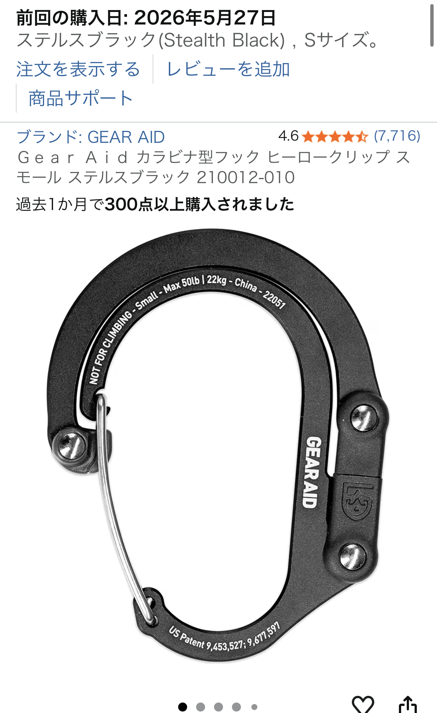

Ｇｅａｒ Ａｉｄ カラビナ型フック ヒーロクリップ スモール（ステルスブラック）実機レビュー

小型で使い勝手の良いカラビナを探しているなら、Ｇｅａｒ Ａｉｄ カラビナ型フック ヒーロクリップ スモール ステルスブラック 210012-010は有力な候補です。実際にSサイズを購入して数週間使ってみると、見た目のスマートさと実用性が両立していることが分かりました。折りたたむとカラビナ1個分ほどに収まり、普段は目立たず必要なときだけ展開できる点が特に便利です。
使い勝手と収納性
リュックのDリングやベルトループに取り付けても干渉が少なく、鍵や小型ライト、ボトルホルダーなど日常的な荷物を安心して吊るせます。折りたたみには少しコツが要りますが、慣れれば片手で操作可能。Sサイズながら耐荷重がしっかりしており、普段使いで不安を感じる場面はほとんどありませんでした。
素材と耐久性
金属部分の作り込みが良く、ヒンジやロック機構にガタつきが出にくい印象です。表面はマットなステルスブラックで傷が目立ちにくく、長期使用でも見た目を保ちやすい仕上がり。アウトドアでの使用にも耐えうる堅牢さを感じました。
実用シーンとおすすめポイント
通勤・通学のバッグアクセサリとして、またキャンプやハイキングでの小物固定にも適しています。大きめのリュックに付けてもバランスが良く、揺れや干渉が少ないためストレスがありません。価格は手頃で、耐久性とデザインを考えればコストパフォーマンスは高いです。
購入前のチェック
- 折りたたみ操作に慣れが必要
- 極端に重い荷物を長時間吊るす用途には向かない
- サイズはSなので大型カラビナを期待する人は注意
総評
星5つのレビューにある「使い勝手良い」という評価は納得できます。小型でありながら耐荷重があり、リュックへの取り付け感も良好。折りたたみのコツを掴めば日常使いでの満足度は高く、アウトドアギアとしても信頼できる一品です。迷っているなら長く使えるギアとして購入を検討して良いでしょう。